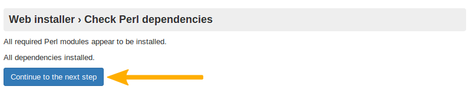
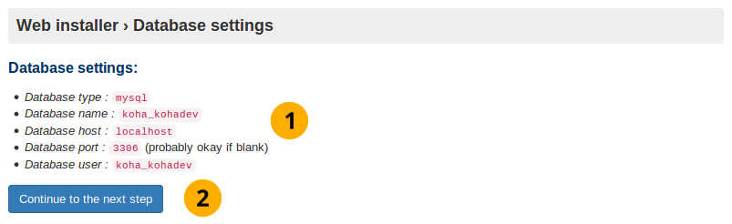
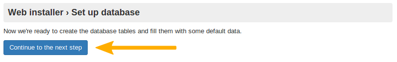
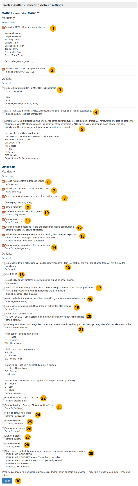
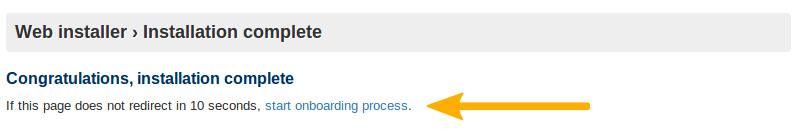
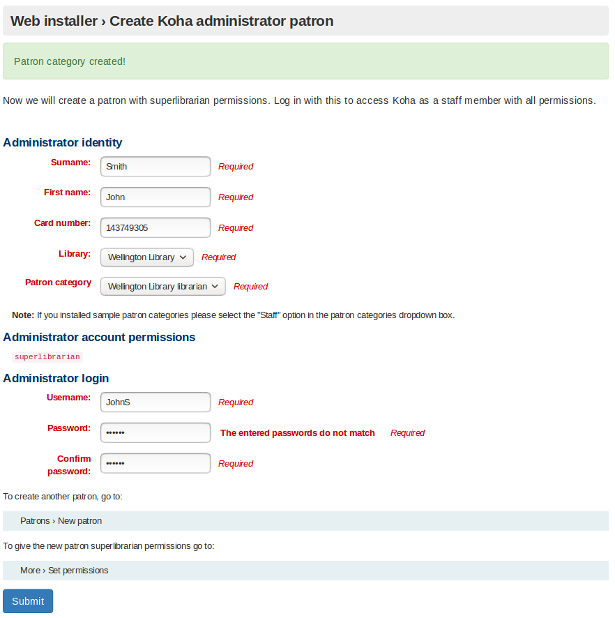
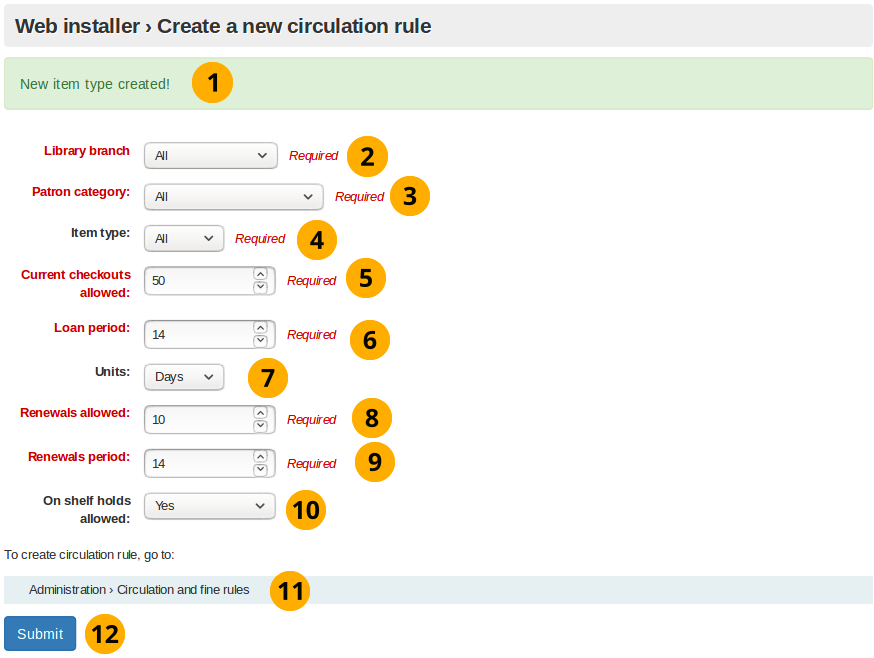
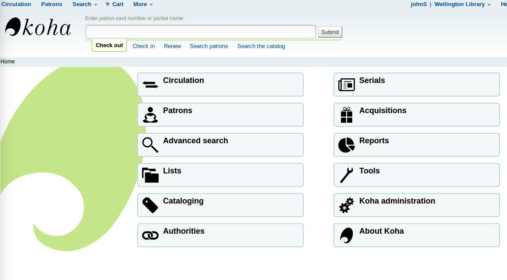

Koha 安裝過程介紹
這是 Koha 安裝手冊。
Koha 圖書館管理系統的安裝過程中使用 2 種工具：
網頁安裝器
使用者導引工具
本文件將會對這兩項工具做說明。
什麼是 Koha 網頁安裝器呢？
透過網頁安裝器能設定資料庫表單，用以儲存所有您在Koha系統裡會用到的資料，其中包括分館、讀者與館藏的資訊。
網頁安裝器以鍵入資料庫管理帳號的登入畫面為起點。
之後，網頁安裝器會新增資料表單並供 Koha 使用的資料。接著，經由使用者導引工具執行若干必要的設定。
什麼是 Koha 使用者導引工具呢？
使用者導引工具確保在啟用 Koha 前，系統內至少有一個圖書館、讀者類型、讀者、館藏類型及流通規則。
如果您已先選擇安裝圖書館，讀者類別，館藏類別的範例資料，那以下的安裝過程就會跳過對應這些資料的建立步驟。
然而，在每次安裝時，您必須建立一個讀者與其帳號密碼 (在使用者導引工具安裝過程的最後，再次登入館員介面時，需要使用到) ，以及一個流通規則。
網頁安裝器
網頁安裝器-登入
登入網頁安裝
安裝 Koha 時，首先出現的是登入畫面。
網頁安裝器-登入
Koha 版本名稱：顯示安裝的 Koha 版本編號。
使用者名稱：koha_kohadev 為預設的資料庫管理者名稱。
密碼：password 為預設的資料庫管理密碼。
登入：點選此按鈕來登入
語言選擇
安裝起始畫面
這是網頁安裝器的第一個畫面。
網頁安裝器起始畫面

語言選擇 下拉選單：在此指定 Koha系統所使用的語文。
备注
以安裝器去安裝另個語言 (如 zh_TW、zh_CN) ，就能在網頁安裝器使用該等語言。
按 繼續下個步驟 載入網頁安裝器的下一個步驟。
安裝 perl 模組已安裝
此畫面顯示安裝器已取得必要的相依套件，並於下個畫面新增資料庫。

已安裝的 Perl 模組
按 繼續下個步驟 鈕載入網頁安裝器的下一個步驟。
資料庫設定
此畫面會列出資料庫的設定值，並請您按下*繼續下個步驟* 代表確認設定值無誤。
备注
這些設定對大多數使用者來說是不會有問題的，否則您應請求支援。

資料庫設定
資料庫設定： 確認資料庫設定值無誤。
按 繼續下個步驟 以完成確認資料庫的設定
連結已建立
按了 下一步 將確立資料庫的連結：

資料庫連結已建立
連結建立訊息： 此訊息代表您已成功地建立資料庫。
按 繼續下個步驟 鈕以載入下個階段
备注
若資料庫有連結上的困難，安裝器的設定將暫停於此。請再次檢查 koha-conf.xml 檔案的連結資訊，並確認資料庫本身的權限及認證的正確性。
準備於資料表單內填入資料
此畫面代表一切已就緒，您可於下個畫面新增資料庫表單。

資料庫等待接收資料
按 繼續下個步驟 鈕以載入下個階段
备注
完成此步驟需要花一點時間。請耐心等待。
新增資料庫表
新增資料庫表

按 繼續下個步驟
準備進行基本設定
此畫面導向並進行Koha操作時所必備的設置。
準備進行基本設定

按 繼續下個步驟
選擇您的 MARC 類型
必須在此畫面選擇 MARC 類型 (儲存於資料庫的書目 (目錄) 紀錄格式)：
選擇您的 MARC 類型

Unimarc： 義大利等歐洲國家 (不含英國) 慣用的格式。
MARC 21： 預選的格式，受美國文化影響的地區常使用它。
按 繼續下個步驟 確認您的選擇
MARC21 與 UNIMARC 的設定
备注
剛才是選擇 MARC 21 或 UNIMARC 做為 MARC 的格式。此頁面則列出這兩種格式的細節資訊。
MARC 21 設定

MARC 21 設定
預設 MARC 21 標準權威類型： 權威類型是權威紀錄的模板 (用來搜尋機構目錄內館藏的搜尋欄位儲存於此)。此選項將安裝權威類型範例。
預設 MARC 21 書目框架： 在前個畫面選定預設MARC 21的書目框架 (並且點選 匯入) 後，系統將會套用此預設的書目框架。
選擇 MARC 21 書目紀錄的對映規則： MARC 21 對應規則係用來搜尋權威類型時，找出特定書目紀錄的所有資訊。
‘FA’，即 ‘快速新增’ 基本輕量的 MARC 21 框架供館藏互借用，或流通櫃台的即時編目： FA MARC 框架僅顯示少量欄位達到即時編目的效果。勾選此項目將安裝基本輕量框架。
書目資料常用類型的範例 MARC 21 書目框架： 安裝此框架模板供新增館藏用。
Koha 預設的容許值： 安裝 Koha 時，所必備的容許值。
預設分類法來源與排序規則： 插入杜威分類法等常用的圖書館分類法。
電子郵件及簡訊的預設訊息： 提供使用者選擇圖書館與其連絡的方式，包括：電子郵件、紙本訊息、簡訊、或電話。少了它們就無法寄送通知。
讀者屬性： 並不會安裝任何資料，且此項目需被移除。
**設定預設訊息供強化訊組組態使用：**強化訊息組態供使用者選擇接收訊息的類型。選定後將插入供 due、predue、與其他進階訊息類型的範例。
**設定給逾期與其他進階通知的電子郵件與 SMS 的預設訊息：**搜入 SMS 與電子郵件類王。選定經由電子郵件或 SMS 發送通知後即為必備。
卷期範例： 此選項會安裝卷期範例，以節省鍵入的人工。
圖書館位置等的容許值範例。安裝後隨時可改： 安裝的容許值，可以篩選使用者的輸入，使其符合圖書館及其他物件的要求。
CSV 設定檔： 可以用 Koha 匯出館藏。CSV 設定檔決定匯出館藏的內容。CSV/tab 匯出不適用於此。
書目館藏的記錄代碼符合 Z39.71-2006 的值： 不是 Koha 的必備。館藏敘述告知使用者圖書館是否典藏及該藏的位置。選定後將安裝館藏敘述的代碼值。
MARC 的關係代碼表： 不是 Koha 的必備。關係是個人 (通常是著者) 與館藏的關係。選定後將在資料庫安裝關係紀錄的範例。
ACQ 模組預設的美元匯率幣別： 安裝美元、英磅、加拿大元與歐元。選定美元為預設的採訪用幣別。不安裝時，則需在採訪前個別設定幣別。
有用的讀者屬性： 不是 Koha 的必備。以條碼識別讀者。勾選後即確認讀者條碼顯示在讀者摘要頁面。
讀者屬性與類別範例： 不是 Koha 的必備。選定後將在資料庫安裝讀者屬性與類別範例。將略過入職工具的新增讀者類型。
標籤與讀者證資料範例： 不是 Koha 的必備，但建議安裝。選定後安裝書標與讀者證的範例資料節省未來新增書標與讀者證的辛勞。
行事曆樣本：星期日、聖誕節、新年 不是 Koha 的必備。選定後於資料庫安裝重複的假期 (聖誕節等) 樣本。
館藏類型範例: 此為非必要項目。 選擇此項目後，資料庫中將會有預設的館藏類型，這意味著在操作新手工具的流程時，會略過建立館藏類型的步驟。
圖書館範例: 此為非必要項目。 選擇此項目後，資料庫中將會有預設的圖書館。 開發者通常藉此項目做功能示範或者開發目的之用。 此項目的選定會使得在操作新手工具的流程時，略過建立圖書館的步驟。
最新消息範例: 此為非必要項目。選擇此項目後，OPAC(線上公用目錄)、館員資料庫首頁上將會出現預設的最新消息。
讀者範例: 此為非必要項目。讀者係指使用 Koha 圖書館管理系統者，例如: 圖書館使用者與館員。選擇此項目後，資料庫中將會有數個預設的讀者範例。 開發者通常藉此項目做功能示範或者開發目的之用。
引言範例: 此為非必要項目。 每日引言會出現在OPAC(線上公用目錄)上向圖書館使用者公告。選擇此項目後將會增添一些圖書館相關的引言。
允許近用以下的伺服器搜尋與下載紀錄資訊： 此為非必要項目，但建議安裝。以此組態 Koha 可以近用 Z39.50 伺服器，搜尋並匯入 MARC 21 紀錄。可以避免人工輸入所有紀錄，且加快處理流程。
按 匯入 鈕安裝預設及選定的資料。
UNIMARC 設定
在UNIMARC 進階設定中有兩種特有的資料項目：
UNIMARC 的英文權威結構
預設的 UNIMARC 英文書目框架
备注
UNIMARC 與 MARC 21 的選項值是一樣的，不必重複。

UNIMARC 設定
UNIMARC 的英文權威結構： 權威紀錄儲存搜尋資料庫內的館藏。不同於 MARC 21，使用 UNIMARC 權威結構時需要與 UNIMARC 相容。選擇此選項才能相容。
預設 UNIMARC 英文書目框架： 在前個畫面勾選 UNIMARC 後，再確認此選項。
按 匯入 鈕安裝資料樣本
選定新增的資料
按了 匯入 鈕後出現 MARC 21 或 UNIMARC 設定畫面。顯示已將選定/預設資料插入資料庫。
選定新增的資料

新增選用資料： 勾取的選用資料將顯示在此。若未勾選則不會顯示 新增選用資料。
新增 MySQL 資料： 將安裝這些資料並顯示在此畫面。
新增必備資料： 如上。
安裝訊息： 告知 Koha 資料已安裝妥當可續使用新手工具。
按 設定 Koha 基本要求 鈕進入另個畫面，帶進新手工具。
進入新手工具
10秒後轉至新手工具啟始畫面。

進入新手工具
备注
若未轉至其他畫面請依箭頭指示點選。
使用者導引工具
新增圖書館
若未安裝樣本圖書館，安裝器將提示新增第一個圖書館或分館。
Koha 裡的圖書館代表一個 “實體的” 地方。可以從管理 -> 圖書館與群組加入更多圖書館。
新增圖書館

圖書館代碼： 最多 10 個字母。
名稱： 圖書館的官方名稱，通常選廣為人知者。
**新增其他圖書館：**如果需要更多圖書館，或者需要對這個新建立的圖書館進行更改，從管理 -> 圖書館與群組新增或編修圖書館
按 送出 鈕就能新增圖書館。
範例：
新增樣本圖書館

圖書館代碼： 為了簡化工作，圖書館代碼最多 10 個字母。
新增讀者屬性
Koha 的讀者必定屬於一個類型。就像一個模子出來的；同個類型的讀者共享相同的特徵，包括流通規則、通知頻率、預約權限及其他。至少應設定一個讀者類型。
必備一個讀者類型：
類型代碼
說明
必備逾期通知
類別
預設隱私
註冊期間：月數或到期日
新增讀者屬性

圖書館新增訊息： 確認成功地新增圖書館。
類型代碼： 最多 10 個字母。
說明： 描述此讀者類型的作用。
必備逾期通知 下拉鈕：預設為 ‘不用’。設定此讀者類型接收逾期通知。
類型： 由館員新增類型。
預設隱私： 預設值為 ‘預設’。預設的隱私控制閱讀紀錄保留的期限。
註冊時間 - 以月為單位： 這是從該讀者類別建立的讀者註冊的月數。
到期日的註冊期限： 從點擊此輸入框時出現的互動日期選擇器日曆圖標中選擇一個日期。您選擇的日期將是從此讀者類別建立的讀者的註冊結束日期。
新增讀者類型的路徑： 從管理 -> 讀者類型可以新增或改變讀者類型。
按 送出 鈕新增讀者類型。
範例：

新增讀者
完成新手程序後，超級圖書館員必須登入館員介面。
备注
在此紀錄使用者帳號及密碼，以便登入為 Koha 管理者 (超級圖書館員)。
必須匯入/選擇：
姓氏
名字
讀者證號碼
圖書館
讀者證類型
使用者名稱
密碼

新增讀者
新增讀者類型訊息： 表示新增讀者類型成功。
姓： 姓或說明
名： 名，或說明
讀者證號： 不能重複
圖書館 下拉選單：以新手工具新增的圖書館，將是唯一選項。否則將被網頁安裝器從樣本圖書館隨機選取。
讀者類型 下拉選單：以新手工具新增的讀者類型，將是唯一選項。否則將選取 館員 讀者類型。
超級圖書館員權限： 可以從館員介面近用所有的圖書館員及網頁功能，且不必編輯。它是 Koha 內最有權限的使用者，小心保管密碼。
帳號： 以帳號登入館員介面及 OPAC (線上公用目錄，Online Patron Access Catalogue)。
密碼： 包括字母、數字與空格，不能超過 8 個字元。
確認密碼： 重複鍵入密碼
按 送出 鈕新增讀者帳號
新增讀者路徑： 進入讀者 -> 新增讀者就能新增或變更讀者
給予讀者權限： 新增讀者後，到更多 -> 設定權限給予權限。
範例：

新增範本讀者
新增館藏類型
若未於網頁安裝器安裝館藏類型範本，將顯示本畫面。
如同讀者類型，館藏類型也是一種模板，用於聚集相同性質的館藏。
您需鍵入：
館藏類型代碼
說明

新增館藏類型
新增管理者帳號訊息： 表示新增管理者成功
館藏類型代碼： 最多 10 個字元
說明： 描述館藏類型的內容。
新增館藏屬性的路徑： 從管理 -> 館藏類型可以新增或編修館藏類型
按 送出 鈕完成新增館藏類型
範例：
新增館藏類型樣本
备注
篩選館藏類型代碼時只接受字母。
新增流通規則
此螢幕顯示從網頁安裝器安裝的樣本資料。
根據圖書館對讀者借閱館藏的限制，新增流通規則。

新增流通規則
备注
此表單只能輸入數字。
新增館藏類型訊息： 表示新增館藏類型成功
分館 下拉選單：可應用於流通規則的圖書館 (或分館)。預設值為 全部，可以從下拉選單選取其中之一。
讀者類型 下拉選單：可應用於流通規則的讀者類型。如同 分館 其預設值為 全部，但可從下拉選單選取其中之一。
館藏類型 下拉選單：可應用於流通規則的館藏類型。除了 全部 還可勾選其他。
借閱冊數： 從指定圖書館、指定讀者類型、與指定館藏類型可借出的冊數。預設為 50。
借閱期限： 允許借閱的日數或小時。預設為 14。
單位 下拉選單：設定為 日，適用於 借閱期限 與 續借期限
續借次數： 允許續借館藏的次數。預設為 10 次。
續借期限： 允許續借的日數或小時。預設為 14。
允許架上預約 下拉選單：允許預約仍在館內的館藏。
新增流通規則的路徑： 從管理 -> 流通與罰款規則新增或編修流通規則
按 送出 鈕完成新增流通規則。
新手工具完成
此頁告知新增流通規則完成，Koha 的安裝結束
網頁安裝訊息： 表示網頁安裝完成
新增流通規則訊息： 表示新增流通規則成功。
啟用 Koha： 點選登入 Koha，使用新手工具新增的管理者帳號。
登入館員介面
完成新手工具的作業，可以使用新手工具新增的讀者帳號登入館員介面
登入畫面
使用者名稱： 輸入新增給讀者的使用者名稱
密碼： 輸入新增的密碼
圖書館： 打算登入的圖書館館員介面。此選項可以是：我的圖書館 或安裝/新增的圖書館。首次登入，使用 我的圖書館 做為預設值也不錯。
按 登入 鈕進入館員介面
範例：
登入樣本

館員介面
現在應出現館員介面

館員介面
参见
館員介面詳情，請參見 https://koha-community.org/documentation/
進階的設定
VirtualHost 覆蓋
Koha允許在VirtualHost級別上覆蓋一些系統設定。
OPAC_BRANCH_DEFAULT
`OPAC_BRANCH_DEFAULT`指令可以用來為OPAC的匿名使用者指定預設分行。
SetEnv OPAC_BRANCH_DEFAULT "CPL"
RequestHeader add X-Koha-SetEnv "OPAC_BRANCH_DEFAULT CPL"
說明：這個覆蓋會影響使用者在登錄OPAC之前看到的 新聞 和 HTML定制 模組。